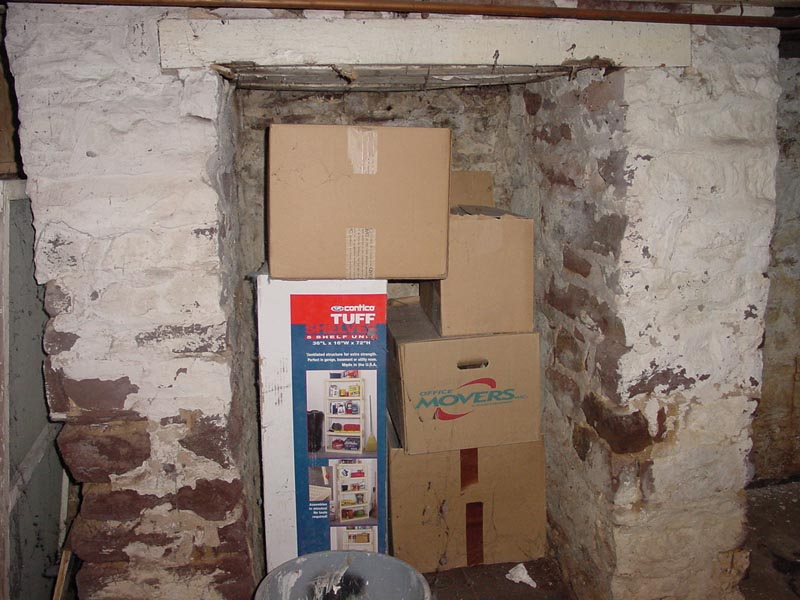

|  |
|
This cubby is created by the supports for the fireplace up in the main living-room. Note how the base of the fireplace above sags disconcertingly down. The boxes are storage and packing containers for various objects within the residence. They themselves are gaining an artistic status thanks to the heavy placement of cobwebs and the effects of moisture and reshaping the otherwise stiff cardboard. |